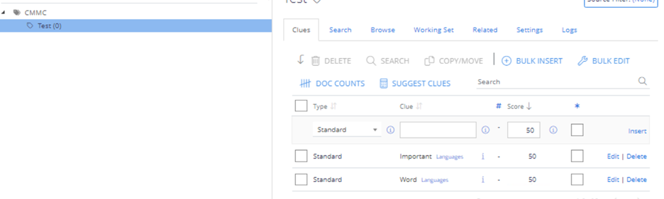

Overview
The Sensitive Data Discovery (SDD) module allows users to generate Netwrix Auditor reports and alerts for sensitive data collected and classified with Netwrix Data Classification (NDC). This article covers the use of custom sensitive file categories in the Sensitive Data Discovery module.
Instructions
IMPORTANT: Due to the current SDD limitations, Auditor can use only taxonomies built-in in NDC:
CCPA
CMMC
Financial Records
GDPR
GLBA
HIPAA
PCI DSS
PHI
PII
Refer to the following steps:
NOTE: You can reset a built-in taxonomy later—they are included in NDC as templates pre-populated with terms/clues.
-
Select the built-in taxonomy to modify—in the main NDC screen, select the Content tab and click Taxonomies. In the left pane of the Term Management section, select the target taxonomy from the drop-down list.
-
Delete the built-in taxonomy terms up to the root term—it is usually named after the taxonomy (e.g., the root CMMC term is named CMMC).
NOTE: To delete parent terms, first delete the children terms.
-
Once the built-in terms are cleared, create a new child term under the root taxonomy term. Right-click the root term and click Add Child Term(s). Then, insert the new clues to the child term.

-
Set up your sources to include target files for the modified taxonomy. Wait for the files to be crawled and classified.
The corresponding Auditor report will include the used taxonomy and file owner.